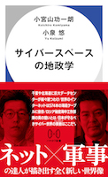
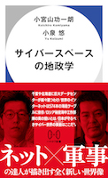

Koichiro KOMIYAMA | 小宮山功一朗
Papers /
Books /
Presentations /
Course /
Other works |
CV |
Contact |
Blog
Affiliation
所属
Director of Global Coordination Division, JPCERT/CC
一般社団法人JPCERTコーディネーションセンター 国際部部長
Senior Researcher, the Keio Research Institute at SFC 慶應義塾大学SFC研究所
上席所員
Part-time Lecturer, Ritsumeikan Asia Pacific University
立命館アジア太平洋大学 非常勤講師
Research Subject
研究課題
Cyber Security, Cyber Conflict, Global Governance, ICT4D
サイバーセキュリティ、サイバー紛争、グローバル・ガバナンス、ICT分野の能力開発
Works
研究業績
Papers
論文
Komiyama, Koichiro. 2025. Norms in New Technological Domains: What’s Next for Japan and the United States in Cyberspace . Center for Strategic and International Studies.
KOMIYAMA, Koichiro. 2023. “Geoeconomics of Data Centers - Techno-Globalism and Techno-Nationalism Clash over
Data -.” Pp. 79–91 in The Book on Asia National Cyber Resilience, edited by K. Lee. Seoul, Korea: Korea University
Center for Cyber Resilience Program.
小宮山功一朗. 2021. “データセンターの地経学 -データを巡るテクノ・グローバリズムとテクノ・ナショナリズムの衝突-.(Geoeconomics of Data Centers.)” 戦略研究 29: 45–63.
KOMIYAMA, Koichiro. 2021. “CHAPTER IV: Challenges and Next Steps for the Global CSIRT Community.” Pp. 30–47 in
So Far, Yet So Close: Japanese and Estonian Cybersecurity Policy, edited by H. Rõigas and T. Jermalavičius.
Tallinn, Estonia: International Centre for Defence and Security. (PDF )
KOMIYAMA, Koichiro and Motohiro Tsuchiya. 2021. “The Triadic Conflict That Lies Ahead in the U.S.-China Tech
Confrontation.” Asia Policy 16 (2): 43–55. (PDF )
小宮山功一朗. 2021. "Roles Report No.3 サイバー空間と民主主義の断層." 東京大学先端科学技術研究センター 創発戦略研究オープンラボ（ROLES）. (PDF )
小宮山功一朗. 2020. "サイバーセキュリティの未来 ─米中対立の先に待ち構える三項対立─." Nextcom 43: 14–23. (PDF。要無料ユーザ登録。 )
小宮山功一朗. 2019. "サイバーセキュリティにおけるインシデント対応コミュニティの発展 - 目的、機能、文化から見るCSIRT -." 情報通信学会誌 37 (1): 13–23. (PDF )
KOMIYAMA, Koichiro. 2019. "The Information Technology Industry in North Korea." Keio University Global Research
Institute (4). (PDF )
小宮山功一朗. 2019. "北朝鮮の情報通信技術産業 -金正日がもたらしたいびつな成功と労働力余剰-." InfoCom REVIEW 72: 17–29. (PDF )
小宮山功一朗 and 土屋大洋. 2018. "研究ノート: サイバーセキュリティ戦略の国際比較 ー 目的と対象範囲に基づく四類型ー." グローバル・ガバナンス 3 (4): 94–109. (PDF )
山口健太郎, 小宮山功一朗, and 内田勝也. 2009. "63-4 ユーザへの接種というアプローチに標的型攻撃対策-2." Pp. 349–50 in 情報処理学会第71会全国大会.
KOMIYAMA, Koichiro, Toshinori Seko, Yusuke Ichinose, Kei. Kato, Kohei. Kawano, and Hiroshi. Yoshiura. 2010.
"In-Depth Evaluation of Content-Based Phishing Detection to Clarify Its Strengths and Limitations." Communications
in Computer and Information Science CCIS 124: 95–106.
加藤慧, 小宮山功一朗, 瀬古敏智, 一瀬友祐, 河野耕平, and 吉浦裕. 2010. "コンテンツベースフィッシング検知手法の大規模実例評価と改良." 情報処理学会研究報告 44: 1–7.
Books 書籍
小宮山功一朗. 2024. “サイバー傭兵を規制できるか ーサイバーセキュリティにおける企業の役割ー.” Pp. 126–35 in 揺らぐ国際秩序と混迷する世界: 崩壊寸前の戦後国際規範, edited by
一般社団法人国際経済連携推進センター(CFIEC). 産経新聞出版.
小宮山功一朗 and 小泉悠. 2024. サイバースペースの地政学 .
早川書房.
小泉悠, 桒原響子, and 小宮山功一朗. 2023. 偽情報戦争
あなたの頭の中で起こる戦い . ウェッジ.
土屋大洋監修『角川インターネット講座（13）仮想戦争の終わり―サイバー戦争とセキュリティ―』KADOKAWA、2014
(「第9章サイバーセキュリティの国際連携と信頼醸成措置」を早貸淳子と担当)。
佐々木良一監修、日本ネットワークセキュリティ協会教育部会著『情報セキュリティプロフェッショナル教科書』アスキー・メディアワークス、2009 (「第2章攻撃の対象と攻撃の手法」3節及び「第8章PCの防御」を担当。
Presentations
口頭発表
Humanitarian Congress Tokyo 2025 , organized by Médecins Sans Frontières/ICRC, Tokyo, April 22, 2025.Strategic Japan 2025: Norms in New Technological Domains , organized by CSIS Japan Chair , Washington D.C., US, March 19, 2025.サイバースペースの地政学(データセンター、海底ケーブル)、東京科学大学、東京科学大学
サイバーセキュリティ経営戦略コース 、2025年1月30日。
サイバースペースの地政学、情報セキュリティ大学院大学、脅威分析とリスク波及評価 ゲストスピーカー、2025年1月11日。
国際政治はサイバー攻撃能力をどう変えたか ー Private Sector Offensive Actor(PSOA)の発展 ー、東京工業大学、東工大
サイバーセキュリティ経営戦略コース 、2024年2月1日。
サイバーセキュリティ 現実と展望、慶應義塾大学大学院、GR先端研究 ゲストスピーカー、2023年12月6日。
サイバーセキュリティと国際政治、セキュリティ・キャンプ全国大会
共通講義、2023年7月28日。
絵文字の秩序、グローバル・ガバナンス学会 第16回研究大会(自由論題1)、2023年5月13日。スライド
Panel Telecommunication Security and Resilience, Australia and
Japan Cyber Security Workshop 2023 , organized by UQ Cyber , Gold
Coast, Australia, May 10, 2023.
北朝鮮のサイバー戦能力、NTT DATAセキュリティDAY 、エヌ・ティ・ティ・データ、2023年2月17日。
Panel US-Japan Cyber Forum: Advancing Cyber Defense and Resilience in the Age of Strategic Competition, Pacific Forum , Hawaii, February 17, 2023.
Panel Defending democracies from
disinformation: A new imperative for Canada-Japan strategic cooperation , The Macdonald-Laurier Institute , Ottawa, February 1, 2023.
安全保障のジレンマーサイバー安全保障のジレンマ、慶應義塾大学大学院、GR先端研究 ゲストスピーカー、2022年12月21日。
防衛三文書の改訂とサイバーセキュリティ、情報セキュリティ大学院大学、情報セキュリティ特別講義 ゲストスピーカー、2022年12月21日。
特別講演: サイバー空間の地政学 ー新しい地図を求めてー、NCA Annual Conference 2023
、2022年12月17日。
Panel WS
#422 Toward a Resilient Internet: Cyber Diplomacy 2.0 , Internet Governance Forum 2022, Addis Ababa,
Ethiopia, December 1, 2022.
国際政治はサイバー攻撃能力をどう変えたか ー Private Sector Offensive Actor(PSOA)の発展 ー、東京工業大学、東工大
サイバーセキュリティ経営戦略コース 、2022年11月24日。
パネル『サイバー戦争 終末のシナリオ』刊行記念トークイベント 「サイバー空間からみた世界の変容」、早川書房、2022年10月7日。イベント報告
Panel: #5 Critical Infrastructure Cybersecurity after Ukraine War, TWNIC, September 28. Program .
社会人大学院で博士号を取るよ 、JANOG50 、2022年7月13日。
サイバーセキュリティが海洋の秩序に学ぶこと、調査研究事業 デジタル変革への対応 TF1 デジタルニューノーマルへの環境整備会合 での講演
、一般財団法人国際経済連携推進センター、2022年6月30日
"APCERT and UNGGE Norm 13(a)", UNIDIR- ASEAN Regional workshop on International Cybercrisis, UNIDIR, June 29
2022.
サイバー空間はいくつに分割されるか?、六本木会議オンライン#42 、国際大学グローバル・コミュニケーション・センター(Glocom)、2022年6月7日。Recording(Youtube)
Politicization/Polarization of CERTs, Panel contributor at Transatlantic Cyber Forum(TCF) Workshop
International Deployment of Incident Response Teams, SNV, May 24, 2022.
JPNICトークラウンジ7回、JPNIC、 2022年5月20日。Recording(Youtube)
サイバー空間をめぐるルール(国際法・規範)の現在地、一橋大学、特別講義（国際政治・安全保障の新領域）のゲストスピーカーとして、2022年5月17日。
2022年のCSIRT(セキュリティ 技術者ネットワーク)~ サイバー空間はいくつに分割されるか? ~、WIDE合宿 、2022年3月8日
"Ransomware and Japan's cyber security strategy.", University of Tokyo Graduate school of Public Policy, as a
guest lecturer of Transformation of Warfare and Technology, December 14, 2021.
Panel WS
#187 Exploring Neutrality: A Multistakeholder Cyber Norms Dialogue , Internet Governance Forum 2021, December
8, 2021. Recording(Youtube)
"Japan's threat landscape and new cyber security strategy.", Università Bocconi Department of Management and
Technology, as a guest lecturer of The State Cyber Conflict class, December 2, 2021.
サイバーセキュリティ: サイバー攻撃能力はどのように行使されるのか、慶應義塾大学大学院、GR先端研究 ゲストスピーカー、2021年12月14日。
データセンターと国際政治、第2回OSNシンポジウム、OSN研究会、2021年10月8日。スライド
デジタル技術戦略:サイバー空間をめぐる国家とグローバルIT企業の争い、戦略研究学会 第19回大会(共通論題:科学技術と戦略)、2021年4月26日。スライド とレジュメ
"Offensive Cyber Operations.", University of Tokyo Graduate school of Public Policy, as a guest lecturer of
Transformation of Warfare and Technology, December 15, 2020.
データセンターの発展と集約: ーサイバー空間の物理性への着目ー、2020年度秋季（第43回）情報通信学会大会、 2020年12月5日。
"CSIRTs: Deglobalization of Security Incident Response Regime.", KGRI
Endowed Course, as a guest lecturer of Cyber Civilization: Revolution and
Evolution , June 16, 2020.
"Offensive Cyber Operations.", University of Tokyo Graduate school of Public Policy, as a guest lecturer of
Transformation of Warfare and Technology, December 17, 2019.
Security of Electronic Parts、慶應義塾大学大学院講義、地域戦略研究(東アジア) ゲストスピーカー、2019年10月29日。
国際サイバーセキュリティの文脈におけるCSIRT、慶應義塾大学大学院、国際サイバーセキュリティゲストスピーカー、2018年12月17日。
"7.4 Cybersecurity Governance.(slide )", Asia Pacific School of Internet Governance , July
10, 2019.
"北朝鮮のIT政策 ―半導体、ソフトウェア開発、ネットワークそして人材育成―" 2018年度秋季（第39回）情報通信学会大会アーリーバードの部
2018年11月17日 (abstract )。
"Confidence Building Measures in Cyberspace.",
2014 TPRC | 42nd Research Conference on Communication, Information and Internet
Policy , 2014/9/12 (poster session).
サイバー空間における信頼醸成措置の実現にむけて グローバル・ガバナンス学会第4回研究大会・同志社大学 2014年4月18日 (
slides )。
Course
担当授業
2025年8月(夏セッション) AIと社会JA(立命館アジア太平洋大学) シラバス
2024年2月(冬セッション) AIと社会JA(立命館アジア太平洋大学) シラバス
2023年10月 - 2024年3月 AIと社会(立命館アジア太平洋大学) シラバス
2021年9月 - 2022年3月 国際関係学 (跡見学園女子大学) シラバス
2021年4月 - 2021年8月 人文学特殊講義(国際教養) D (跡見学園女子大学) シラバス
2021年4月 - 2021年8月 人文学特殊講義(国際教養) A (跡見学園女子大学) シラバス
Dissertation 博士学位論文
小宮山功一朗. 2020. "サイバーセキュリティのグローバル・ガバナンス." 慶應慶應義塾大学大学院政策・メディア研究科. (PDF )
Others その他
電気新聞. 2025. “［時流を問う］小宮山功一朗氏／サイバー空間の安全保障.” 電気新聞, April 7, 5面.
Podcast: Strategy
Speaks episode 8: The EU, the Indo-Pacific and Digital Partnerships (Koichiro Komiyama, Raluca Csernatoni and
Daniel Fiott , CSDS Brussels, November 28, 2024
Pivot 公式チャネル. 2024. "pivot talk: 千葉県印西市が「地政学的に」重要な理由 ."
Pivot.
小宮山功一朗. 2024. “テレグラム創業者逮捕が示唆したこと、オンラインサービス事業者は「たんなる通信路」ではない.” Wedge ONLINE. (https://wedge.ismedia.jp/articles/-/35103 ).
Podcast: Cyber ASEAN Conversations Episode 6:
Advancing Southeast Asia's Cyber Resiliency and Capacity , The Indo-Pacific Current, May 8, 2024
小宮山功一朗. 2024. “サイバー傭兵を規制できるか ―サイバーセキュリティにおける企業の役割―.” 一般財団法人国際経済連携推進センター. (https://www.cfiec.jp/2024/komiyama_0507/ ).
Podcast: Cyber ASEAN Conversations Episode 1:
Southeast Asia's Cybersecurity and Tech Landscape , The Indo-Pacific Current, April 8, 2024
小宮山功一朗. 2023. “サイバー戦争による市民の巻き添えを防げるか？.” Wedge ONLINE. (https://wedge.ismedia.jp/articles/-/32037 ).
小宮山功一朗. 2023. “知られざるサイバー空間で起きる資源獲得競争.” Wedge ONLINE. (https://wedge.ismedia.jp/articles/-/30239 ).
KOMIYAMA, Koichiro. 2023. “Canada and Japan’s Common Miscalculation in Cyberspace: Koichiro KOMIYAMA for Inside
Policy.” Macdonald-Laurier Institute (blog). March 16, 2023. https://macdonaldlaurier.ca/canada-and-japans-common-miscalculation-in-cyberspace-koichiro-komiyama-for-inside-policy/ .
小宮山功一朗. 2023. “謎多きアプリ「テレグラム」とは一体何か.” Wedge ONLINE. (https://wedge.ismedia.jp/articles/-/29316 ).
実積寿也, 前村昌紀, 白畑真, 堀越功, 小宮山功一朗, and 水越一郎. 2023. “論考: スプリンターネットをめぐる議論 .” 一般財団法人情報法制研究所. (https://jilis.org/report/2023/jilisreport-vol5no2.pdf ).
小宮山功一朗. 2022. “北朝鮮のサイバー攻撃能力: 金正日の遺産、金正恩の戦術.” 笹川平和財団 IINA情報ネットワーク分析. (Webページ ).
IT批評編集部. 2022. サイバー空間という闘争領域とその拡大
――慶應義塾大学SFC研究所 上席所員 小宮山 功一朗氏に聞く（１） ". IT批評. (インタビュイーとして協力).
IT批評編集部. 2022. サイバー空間という闘争領域とその拡大
――慶應義塾大学SFC研究所 上席所員 小宮山 功一朗氏に聞く（２） ". IT批評. (インタビュイーとして協力).
小宮山功一朗. 2017. "論点 サイバー人材アフリカに必要." 読売新聞, 5月12日.
小宮山功一朗. 2017. "偽JPCERTドメイン名を取り戻すための60日間~ドメイン名紛争処理をしてみた～." JPCERT/CC Eyes. (https://blogs.jpcert.or.jp/ja/2017/05/udrp.html ).
CV
略歴
Professional Experience
職歴
Education
学歴
July 2020: Received Ph.D. from the Keio University Graduate School of Media and Governance.
慶應義塾大学大学院政策・メディア研究科より博士(政策・メディア)を取得
September 2019: Keio University Graduate School of Media and Governance, coursework completed without degree.
慶應義塾大学大学院政策・メディア研究科 後期博士課程 単位取得退学
March 2002: Aoyama Gakuin University, B.A in Business Administration
青山学院大学経営学部経営学科卒業
Committee Memberships
委員としての活動
Academic Society
所属学会・団体
Certificate
資格
Honors & awards
賞罰
March 2025: サイバーセキュリティアワード2025 「サイバースペースの地政学」が書籍部門最優秀賞を受賞
June 2016: AfricaCERT Meritorious Service Award アフリカサート貢献賞
January 2012: Asia-Pacific Information Security Leadership Award アジア・パシフィック 情報セキュリティ・
リーダーシップ・アチーブメント
Mail:
My email Here Blog in Japanese , LinkedIn , researchmap
Follow
@kkomiyama
Misc.
その他
Where I have been. (Trip Record)
 

{kind=link}